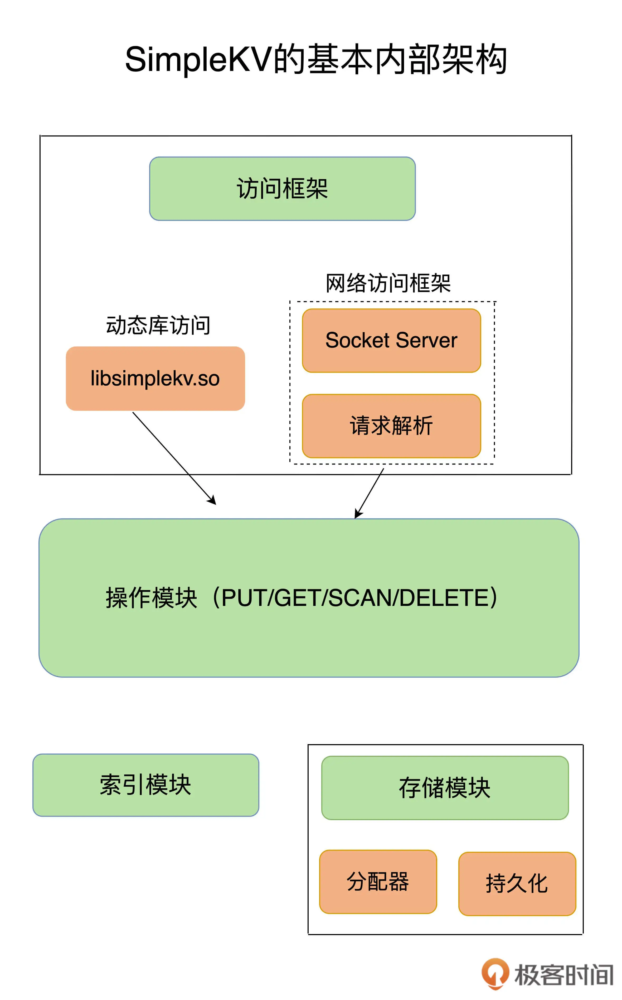

- 00 开篇词 这样学Redis，才能技高一筹.md
- 01 基本架构：一个键值数据库包含什么？.md
- 02 数据结构：快速的Redis有哪些慢操作？.md
- 03 高性能IO模型：为什么单线程Redis能那么快？.md
- 04 AOF日志：宕机了，Redis如何避免数据丢失？.md
- 05 内存快照：宕机后，Redis如何实现快速恢复？.md
- 06 数据同步：主从库如何实现数据一致？.md
- 07 哨兵机制：主库挂了，如何不间断服务？.md
- 08 哨兵集群：哨兵挂了，主从库还能切换吗？.md
- 09 切片集群：数据增多了，是该加内存还是加实例？.md
- 10 第1～9讲课后思考题答案及常见问题答疑.md
- 11 “万金油”的String，为什么不好用了？.md
- 12 有一亿个keys要统计，应该用哪种集合？.md
- 13 GEO是什么？还可以定义新的数据类型吗？.md
- 14 如何在Redis中保存时间序列数据？.md
- 15 消息队列的考验：Redis有哪些解决方案？.md
- 16 异步机制：如何避免单线程模型的阻塞？.md
- 17 为什么CPU结构也会影响Redis的性能？.md
- 18 波动的响应延迟：如何应对变慢的Redis？（上）.md
- 19 波动的响应延迟：如何应对变慢的Redis？（下）.md
- 20 删除数据后，为什么内存占用率还是很高？.md
- 21 缓冲区：一个可能引发“惨案”的地方.md
- 22 第11～21讲课后思考题答案及常见问题答疑.md
- 23 旁路缓存：Redis是如何工作的？.md
- 24 替换策略：缓存满了怎么办？.md
- 25 缓存异常（上）：如何解决缓存和数据库的数据不一致问题？.md
- 26 缓存异常（下）：如何解决缓存雪崩、击穿、穿透难题？.md
- 27 缓存被污染了，该怎么办？.md
- 28 Pika：如何基于SSD实现大容量Redis？.md
- 29 无锁的原子操作：Redis如何应对并发访问？.md
- 30 如何使用Redis实现分布式锁？.md
- 31 事务机制：Redis能实现ACID属性吗？.md
- 32 Redis主从同步与故障切换，有哪些坑？.md
- 33 脑裂：一次奇怪的数据丢失.md
- 34 第23~33讲课后思考题答案及常见问题答疑.md
- 35 Codis VS Redis Cluster：我该选择哪一个集群方案？.md
- 36 Redis支撑秒杀场景的关键技术和实践都有哪些？.md
- 37 数据分布优化：如何应对数据倾斜？.md
- 38 通信开销：限制Redis Cluster规模的关键因素.md
- 39 Redis 6.0的新特性：多线程、客户端缓存与安全.md
- 40 Redis的下一步：基于NVM内存的实践.md
- 41 第35～40讲课后思考题答案及常见问题答疑.md
- 加餐 01 经典的Redis学习资料有哪些？.md
- 加餐 02 用户Kaito：我是如何学习Redis的？.md
- 加餐 03 用户Kaito：我希望成为在压力中成长的人.md
- 加餐 04 Redis客户端如何与服务器端交换命令和数据？.md
- 加餐 05 Redis有哪些好用的运维工具？.md
- 加餐 06 Redis的使用规范小建议.md
- 加餐 07 从微博的Redis实践中，我们可以学到哪些经验？.md
- 结束语 从学习Redis到向Redis学习.md
01 基本架构：一个键值数据库包含什么？
我们知道，Redis 是典型的键值数据库，所以今天，我准备手把手地带你构建一个简单的键值数据库。为啥要这么做呢？
还记得我在开篇词说过吗？Redis 本身比较复杂，如果我们一上来就直接研究一个个具体的技术点，比如“单线程”“缓存”等，虽然可以直接学习到具体的内容，甚至立马就能解决一些小问题，但是这样学，很容易迷失在细枝末节里。
从我自己的经验来看，更好的学习方式就是先建立起“系统观”。这也就是说，如果我们想要深入理解和优化 Redis，就必须要对它的总体架构和关键模块有一个全局的认知，然后再深入到具体的技术点。这也是我们这门课坚持的一种讲课方式。
我相信，经过这样一个过程，我们在实践中定位和解决问题时，就会轻松很多，而且你还可以把这个学习方式迁移到其他的学习活动上。我希望你能彻底掌握这个学习思路，让自己的学习、工作效率更高。
说远了，还是回到我们今天的课程主题上。今天，在构造这个简单的键值数据库时，我们只需要关注整体架构和核心模块。这就相当于医学上在正式解剖人体之前，会先解剖一只小白鼠。我们通过剖析这个最简单的键值数据库，来迅速抓住学习和调优 Redis 的关键。
我把这个简单的键值数据库称为 SimpleKV。需要注意的是，GitHub 上也有一个名为 SimpleKV 的项目，这跟我说的 SimpleKV 不是一回事，我说的只是一个具有关键组件的键值数据库架构。
好了，你是不是已经准备好了，那我们就一起来构造 SimpleKV 吧。
开始构造 SimpleKV 时，首先就要考虑里面可以存什么样的数据，对数据可以做什么样的操作，也就是数据模型和操作接口。它们看似简单，实际上却是我们理解 Redis 经常被用于缓存、秒杀、分布式锁等场景的重要基础。
理解了数据模型，你就会明白，为什么在有些场景下，原先使用关系型数据库保存的数据，也可以用键值数据库保存。例如，用户信息（用户 ID、姓名、年龄、性别等）通常用关系型数据库保存，在这个场景下，一个用户 ID 对应一个用户信息集合，这就是键值数据库的一种数据模型，它同样能完成这一存储需求。
但是，如果你只知道数据模型，而不了解操作接口的话，可能就无法理解，为什么在有些场景中，使用键值数据库又不合适了。例如，同样是在上面的场景中，如果你要对多个用户的年龄计算均值，键值数据库就无法完成了。因为它只提供简单的操作接口，无法支持复杂的聚合计算。
那么，对于 Redis 来说，它到底能做什么，不能做什么呢？只有先搞懂它的数据模型和操作接口，我们才能真正把“这块好钢用在刀刃上”。
接下来，我们就先来看可以存哪些数据。
可以存哪些数据？
对于键值数据库而言，基本的数据模型是 key-value 模型。 例如，“hello”: “world”就是一个基本的 KV 对，其中，“hello”是 key，“world”是 value。SimpleKV 也不例外。在 SimpleKV 中，key 是 String 类型，而 value 是基本数据类型，例如 String、整型等。
但是，SimpleKV 毕竟是一个简单的键值数据库，对于实际生产环境中的键值数据库来说，value 类型还可以是复杂类型。
不同键值数据库支持的 key 类型一般差异不大，而 value 类型则有较大差别。我们在对键值数据库进行选型时，一个重要的考虑因素是它支持的 value 类型。例如，Memcached 支持的 value 类型仅为 String 类型，而 Redis 支持的 value 类型包括了 String、哈希表、列表、集合等。Redis 能够在实际业务场景中得到广泛的应用，就是得益于支持多样化类型的 value。
从使用的角度来说，不同 value 类型的实现，不仅可以支撑不同业务的数据需求，而且也隐含着不同数据结构在性能、空间效率等方面的差异，从而导致不同的 value 操作之间存在着差异。
只有深入地理解了这背后的原理，我们才能在选择 Redis value 类型和优化 Redis 性能时，做到游刃有余。
可以对数据做什么操作？
知道了数据模型，接下来，我们就要看它对数据的基本操作了。SimpleKV 是一个简单的键值数据库，因此，基本操作无外乎增删改查。
我们先来了解下 SimpleKV 需要支持的 3 种基本操作，即 PUT、GET 和 DELETE。
- PUT：新写入或更新一个 key-value 对；
- GET：根据一个 key 读取相应的 value 值；
- DELETE：根据一个 key 删除整个 key-value 对。
需要注意的是，有些键值数据库的新写 / 更新操作叫 SET。新写入和更新虽然是用一个操作接口，但在实际执行时，会根据 key 是否存在而执行相应的新写或更新流程。
在实际的业务场景中，我们经常会碰到这种情况：查询一个用户在一段时间内的访问记录。这种操作在键值数据库中属于 SCAN 操作，即根据一段 key 的范围返回相应的 value 值。因此，PUT/GET/DELETE/SCAN 是一个键值数据库的基本操作集合。
此外，实际业务场景通常还有更加丰富的需求，例如，在黑白名单应用中，需要判断某个用户是否存在。如果将该用户的 ID 作为 key，那么，可以增加 EXISTS 操作接口，用于判断某个 key 是否存在。对于一个具体的键值数据库而言，你可以通过查看操作文档，了解其详细的操作接口。
当然，当一个键值数据库的 value 类型多样化时，就需要包含相应的操作接口。例如，Redis 的 value 有列表类型，因此它的接口就要包括对列表 value 的操作。后面我也会具体介绍，不同操作对 Redis 访问效率的影响。
说到这儿呢，数据模型和操作接口我们就构造完成了，这是我们的基础工作。接下来呢，我们就要更进一步，考虑一个非常重要的设计问题：键值对保存在内存还是外存？
保存在内存的好处是读写很快，毕竟内存的访问速度一般都在百 ns 级别。但是，潜在的风险是一旦掉电，所有的数据都会丢失。
保存在外存，虽然可以避免数据丢失，但是受限于磁盘的慢速读写（通常在几 ms 级别），键值数据库的整体性能会被拉低。
因此，如何进行设计选择，我们通常需要考虑键值数据库的主要应用场景。比如，缓存场景下的数据需要能快速访问但允许丢失，那么，用于此场景的键值数据库通常采用内存保存键值数据。Memcached 和 Redis 都是属于内存键值数据库。对于 Redis 而言，缓存是非常重要的一个应用场景。后面我会重点介绍 Redis 作为缓存使用的关键机制、优势，以及常见的优化方法。
为了和 Redis 保持一致，我们的 SimpleKV 就采用内存保存键值数据。接下来，我们来了解下 SimpleKV 的基本组件。
大体来说，一个键值数据库包括了访问框架、索引模块、操作模块和存储模块四部分（见下图）。接下来，我们就从这四个部分入手，继续构建我们的 SimpleKV。

采用什么访问模式？
访问模式通常有两种：一种是通过函数库调用的方式供外部应用使用，比如，上图中的 libsimplekv.so，就是以动态链接库的形式链接到我们自己的程序中，提供键值存储功能；另一种是通过网络框架以 Socket 通信的形式对外提供键值对操作，这种形式可以提供广泛的键值存储服务。在上图中，我们可以看到，网络框架中包括 Socket Server 和协议解析。
不同的键值数据库服务器和客户端交互的协议并不相同，我们在对键值数据库进行二次开发、新增功能时，必须要了解和掌握键值数据库的通信协议，这样才能开发出兼容的客户端。
实际的键值数据库也基本采用上述两种方式，例如，RocksDB 以动态链接库的形式使用，而 Memcached 和 Redis 则是通过网络框架访问。后面我还会给你介绍 Redis 现有的客户端和通信协议。
通过网络框架提供键值存储服务，一方面扩大了键值数据库的受用面，但另一方面，也给键值数据库的性能、运行模型提供了不同的设计选择，带来了一些潜在的问题。
举个例子，当客户端发送一个如下的命令后，该命令会被封装在网络包中发送给键值数据库：
PUT hello world
键值数据库网络框架接收到网络包，并按照相应的协议进行解析之后，就可以知道，客户端想写入一个键值对，并开始实际的写入流程。此时，我们会遇到一个系统设计上的问题，简单来说，就是网络连接的处理、网络请求的解析，以及数据存取的处理，是用一个线程、多个线程，还是多个进程来交互处理呢？该如何进行设计和取舍呢？我们一般把这个问题称为 I/O 模型设计。不同的 I/O 模型对键值数据库的性能和可扩展性会有不同的影响。
举个例子，如果一个线程既要处理网络连接、解析请求，又要完成数据存取，一旦某一步操作发生阻塞，整个线程就会阻塞住，这就降低了系统响应速度。如果我们采用不同线程处理不同操作，那么，某个线程被阻塞时，其他线程还能正常运行。但是，不同线程间如果需要访问共享资源，那又会产生线程竞争，也会影响系统效率，这又该怎么办呢？所以，这的确是个“两难”选择，需要我们进行精心的设计。
你可能经常听说 Redis 是单线程，那么，Redis 又是如何做到“单线程，高性能”的呢？后面我再和你好好聊一聊。
如何定位键值对的位置？
当 SimpleKV 解析了客户端发来的请求，知道了要进行的键值对操作，此时，SimpleKV 需要查找所要操作的键值对是否存在，这依赖于键值数据库的索引模块。索引的作用是让键值数据库根据 key 找到相应 value 的存储位置，进而执行操作。
索引的类型有很多，常见的有哈希表、B+ 树、字典树等。不同的索引结构在性能、空间消耗、并发控制等方面具有不同的特征。如果你看过其他键值数据库，就会发现，不同键值数据库采用的索引并不相同，例如，Memcached 和 Redis 采用哈希表作为 key-value 索引，而 RocksDB 则采用跳表作为内存中 key-value 的索引。
一般而言，内存键值数据库（例如 Redis）采用哈希表作为索引，很大一部分原因在于，其键值数据基本都是保存在内存中的，而内存的高性能随机访问特性可以很好地与哈希表 O(1) 的操作复杂度相匹配。
SimpleKV 的索引根据 key 找到 value 的存储位置即可。但是，和 SimpleKV 不同，对于 Redis 而言，很有意思的一点是，它的 value 支持多种类型，当我们通过索引找到一个 key 所对应的 value 后，仍然需要从 value 的复杂结构（例如集合和列表）中进一步找到我们实际需要的数据，这个操作的效率本身就依赖于它们的实现结构。
Redis 采用一些常见的高效索引结构作为某些 value 类型的底层数据结构，这一技术路线为 Redis 实现高性能访问提供了良好的支撑。
不同操作的具体逻辑是怎样的？
SimpleKV 的索引模块负责根据 key 找到相应的 value 的存储位置。对于不同的操作来说，找到存储位置之后，需要进一步执行的操作的具体逻辑会有所差异。SimpleKV 的操作模块就实现了不同操作的具体逻辑：
- 对于 GET/SCAN 操作而言，此时根据 value 的存储位置返回 value 值即可；
- 对于 PUT 一个新的键值对数据而言，SimpleKV 需要为该键值对分配内存空间；
- 对于 DELETE 操作，SimpleKV 需要删除键值对，并释放相应的内存空间，这个过程由分配器完成。
不知道你注意到没有，对于 PUT 和 DELETE 两种操作来说，除了新写入和删除键值对，还需要分配和释放内存。这就不得不提 SimpleKV 的存储模块了。
如何实现重启后快速提供服务？
SimpleKV 采用了常用的内存分配器 glibc 的 malloc 和 free，因此，SimpleKV 并不需要特别考虑内存空间的管理问题。但是，键值数据库的键值对通常大小不一，glibc 的分配器在处理随机的大小内存块分配时，表现并不好。一旦保存的键值对数据规模过大，就可能会造成较严重的内存碎片问题。
因此，分配器是键值数据库中的一个关键因素。对于以内存存储为主的 Redis 而言，这点尤为重要。Redis 的内存分配器提供了多种选择，分配效率也不一样，后面我会具体讲一讲这个问题。
SimpleKV 虽然依赖于内存保存数据，提供快速访问，但是，我也希望 SimpleKV 重启后能快速重新提供服务，所以，我在 SimpleKV 的存储模块中增加了持久化功能。
不过，鉴于磁盘管理要比内存管理复杂，SimpleKV 就直接采用了文件形式，将键值数据通过调用本地文件系统的操作接口保存在磁盘上。此时，SimpleKV 只需要考虑何时将内存中的键值数据保存到文件中，就可以了。
一种方式是，对于每一个键值对，SimpleKV 都对其进行落盘保存，这虽然让 SimpleKV 的数据更加可靠，但是，因为每次都要写盘，SimpleKV 的性能会受到很大影响。
另一种方式是，SimpleKV 只是周期性地把内存中的键值数据保存到文件中，这样可以避免频繁写盘操作的性能影响。但是，一个潜在的代价是 SimpleKV 的数据仍然有丢失的风险。
和 SimpleKV 一样，Redis 也提供了持久化功能。不过，为了适应不同的业务场景，Redis 为持久化提供了诸多的执行机制和优化改进，后面我会和你逐一介绍 Redis 在持久化机制中的关键设计考虑。
小结
至此，我们构造了一个简单的键值数据库 SimpleKV。可以看到，前面两步我们是从应用的角度进行设计的，也就是应用视角；后面四步其实就是 SimpleKV 完整的内部构造，可谓是麻雀虽小，五脏俱全。
SimpleKV 包含了一个键值数据库的基本组件，对这些组件有了了解之后，后面在学习 Redis 这个丰富版的 SimpleKV 时，就会轻松很多。
为了支持更加丰富的业务场景，Redis 对这些组件或者功能进行了扩展，或者说是进行了精细优化，从而满足了功能和性能等方面的要求。

从这张对比图中，我们可以看到，从 SimpleKV 演进到 Redis，有以下几个重要变化：
- Redis 主要通过网络框架进行访问，而不再是动态库了，这也使得 Redis 可以作为一个基础性的网络服务进行访问，扩大了 Redis 的应用范围。
- Redis 数据模型中的 value 类型很丰富，因此也带来了更多的操作接口，例如面向列表的 LPUSH/LPOP，面向集合的 SADD/SREM 等。在下节课，我将和你聊聊这些 value 模型背后的数据结构和操作效率，以及它们对 Redis 性能的影响。
- Redis 的持久化模块能支持两种方式：日志（AOF）和快照（RDB），这两种持久化方式具有不同的优劣势，影响到 Redis 的访问性能和可靠性。
- SimpleKV 是个简单的单机键值数据库，但是，Redis 支持高可靠集群和高可扩展集群，因此，Redis 中包含了相应的集群功能支撑模块。
通过这节课 SimpleKV 的构建，我相信你已经对键值数据库的基本结构和重要模块有了整体认知和深刻理解，这其实也是 Redis 单机版的核心基础。针对刚刚提到的几点 Redis 的重大演进，在接下来的课程中，我会依次进行重点讲解。与此同时，我还会结合实战场景，让你不仅能够理解原理，还能真正学以致用，提升实战能力。
每课一问
给你留个小问题：和你了解的 Redis 相比，你觉得，SimpleKV 里面还缺少什么功能组件或模块吗？
欢迎在留言区写下你的思考和答案，我们一起交流讨论，也欢迎你把今天的内容分享给你的朋友。
© 2019 - 2023 Liangliang Lee. Powered by Vert.x and hexo-theme-book.